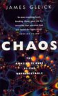

|  | The copy I have was published in hardback by Heinemann, 1988. ISBN 0 434 29554 X. If you want to, you can now but the paper-back version of book online at Amazon |
All of the history in this web site comes more-or-less straight out of Gleick's book. Except I will have skipped bits and probably got other bits wrong. Ah well.
Anyway, my way of paying for quoting from the text is to give you the temptimg cover blurb from the book:
Over the last decade, physicists, biologists, astronomers and economists have created a new way of understanding the growth of complexity in nature. This new science, called chaos, offers a way of seeing order and pattern where formerly only the random, the erratic, the unpredictable--in short, the chaotic--had been observed. In the words of Douglas Hofstadter, "It turns out that an eerie type of chaos can lurk just behind a façade of order--and yet, deep inside the chaos lurks an even eerier type of order. "The science of chaos cuts across traditional scientific disciplines, tying together unrelated kinds of wildness and irregularity: from the turbulence of weather to the complicated rhythms of the human heart, from the design of snowflakes to the whorls of windswept desert sands. Highly mathematical in its origin, chaos nonetheless is a science of the everyday world, addressing questions that every child has wondered about: how clouds form, how smoke rises, how water eddies in a stream.
In Chaos, James Gleick tells the remarkable story of an idea--an idea that at once frightened and fascinated the scientists who began to explore it. Gleick describes the stunning and unexpected insights of these scientists: Edward Lorenz's discovery of the Butterfly Effect that underlies weather's unpredictability and constancy; Mitchell Feigenbaum's calculation, prompted by his meditations on nature and art, of a universal constant; Benoit Mandelbrot's concept of fractals, which has created a new geometry of nature.
Chaos is a history of scientific discovery. It chronicles, in the participants' own words, their conflicts and frustrations, their emotions and moments of revelation. It is a record of a revolution, the birth of a new science. After reading Chaos, you will never look at the world in quite the same way again.